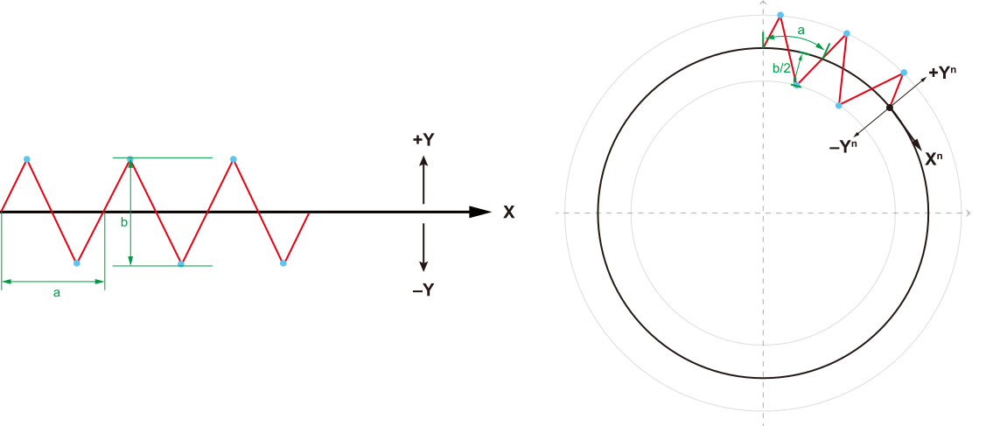
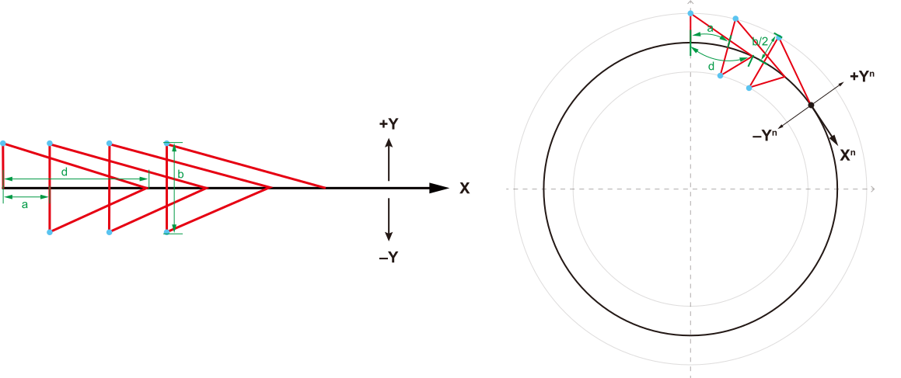
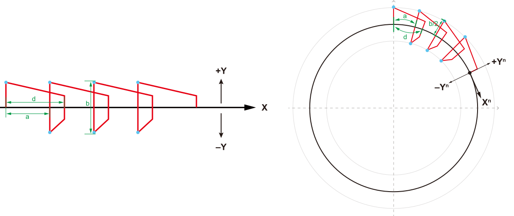
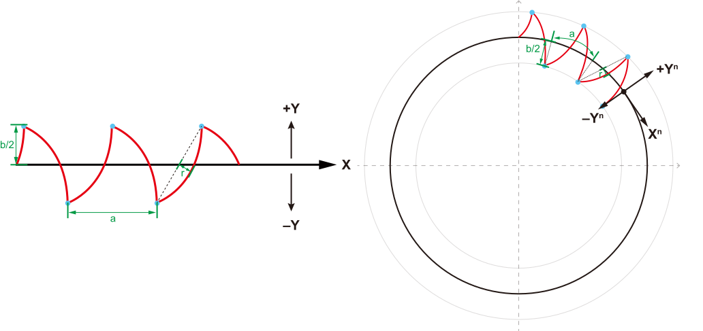
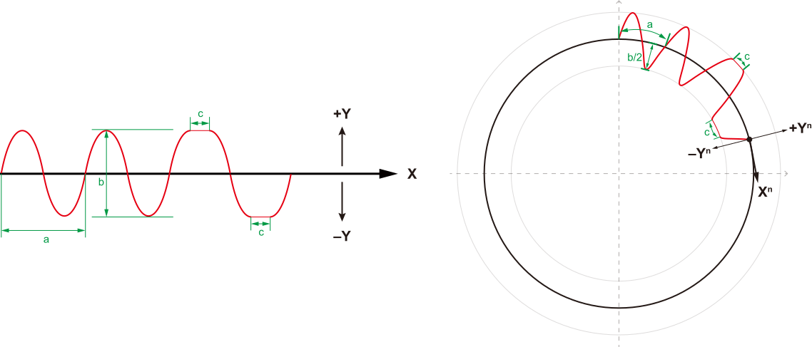
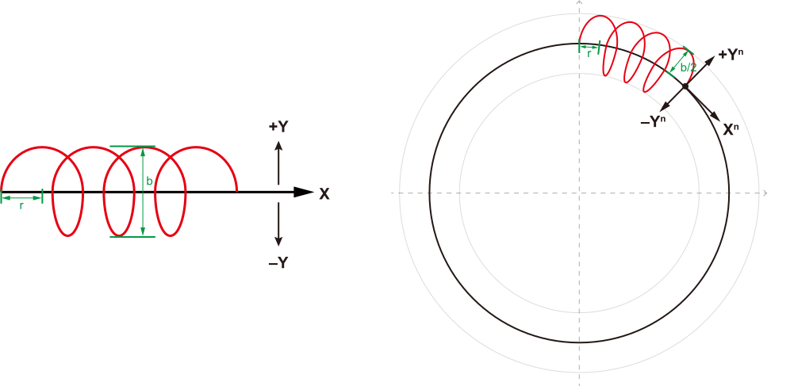
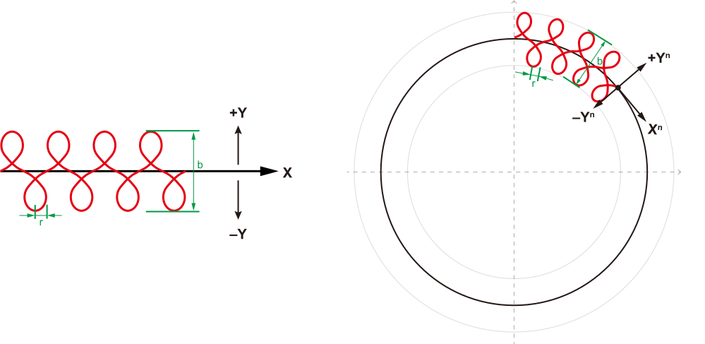
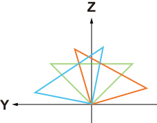
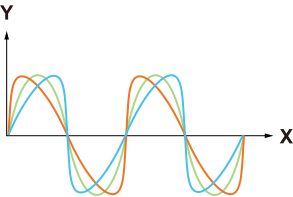

2. 术语
摆动模式：
Z字摆：焊枪末端一边走Z字形轨迹一边前进的焊接模式。前进轨迹可以为直线或圆弧。

图 2.1 Z 字摆
三角摆：焊枪末端一边走三角形轨迹一边前进的焊接模式。前进轨迹可以为直线或圆弧。

图 2.2 三角摆
台形摆：焊枪末端一边走倒放的梯形轨迹一边前进的焊接模式。前进轨迹可以为直线或圆弧。

图 2.3 台形摆
月牙摆：焊枪末端一边走圆弧形轨迹一边前进的焊接模式。前进轨迹可以为直线或圆弧。

图 2.4 月牙摆
正弦摆：焊枪末端一边走S形轨迹一边前进的焊接模式。前进轨迹可以为直线或圆弧。

图 2.5 正弦摆
圆形摆：焊枪末端一边走圆形或椭圆形轨迹一边前进的焊接模式。前进轨迹可以为直线或圆弧。

图 2.6 圆形摆
8字摆：焊枪末端一边走8字形轨迹一边前进的焊接模式。前进轨迹可以为直线或圆弧。

图 2.7 8字摆
摆动频率 ：焊枪在单位时间内完成的完整摆动周期数
左、右摆幅 ：焊枪从中线位置向左（+Y）或向右（-Y）摆动的最大距离
摆长半径 ：月牙摆、圆形摆和8字摆的摆动轨迹半径
左、右、中间停留时间 ：焊枪在摆动极限位置或中心位置的停留时长
纵角 ：指焊枪在焊接方向平面内的倾斜角度，即焊枪与焊缝垂直线的夹角。下图以正弦摆为例，其他摆动模式同理。

备注
Z：焊枪的z方向
绿色线：纵角为0°
橙色线：纵角为正值
蓝色线：纵角为负值
横角 ：指焊枪在垂直于焊接方向平面内的倾斜角度。下图以正弦摆为例，其他摆动模式同理。

备注
X：焊接方向
绿色线：纵角为0°
橙色线：纵角为正值
蓝色线：纵角为负值
中心抬升量 ：焊枪在摆动中心点相对于两侧的高度偏移。
终点摆动频率 ：临近焊缝终点的摆动频率。
终点左、右摆幅 ：临近焊缝终点的左右摆幅。
渐变路径长度 ：从开始启用渐变参数到焊接轨迹终点之间的距离。
JKS 脚本： JAKA 机器人控制器可执行的脚本格式，由脚本生成接口输出。